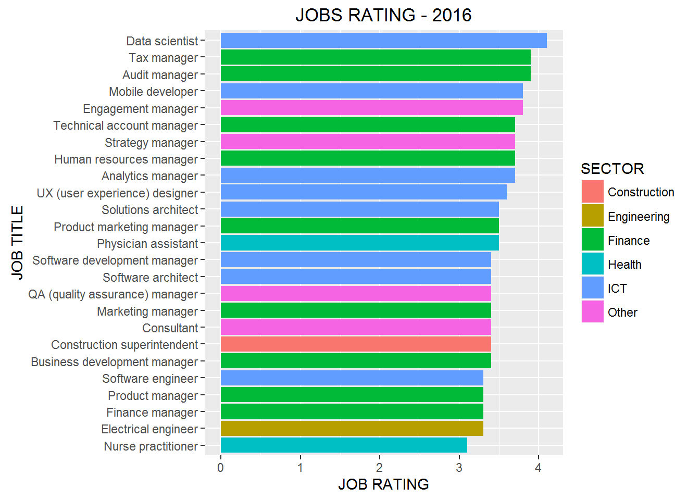
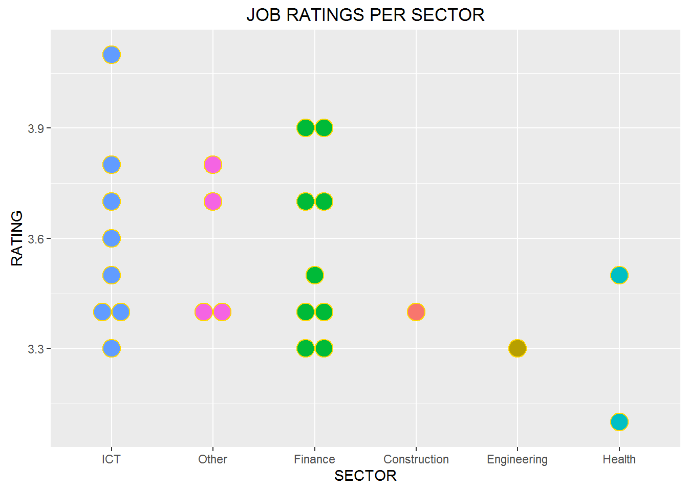
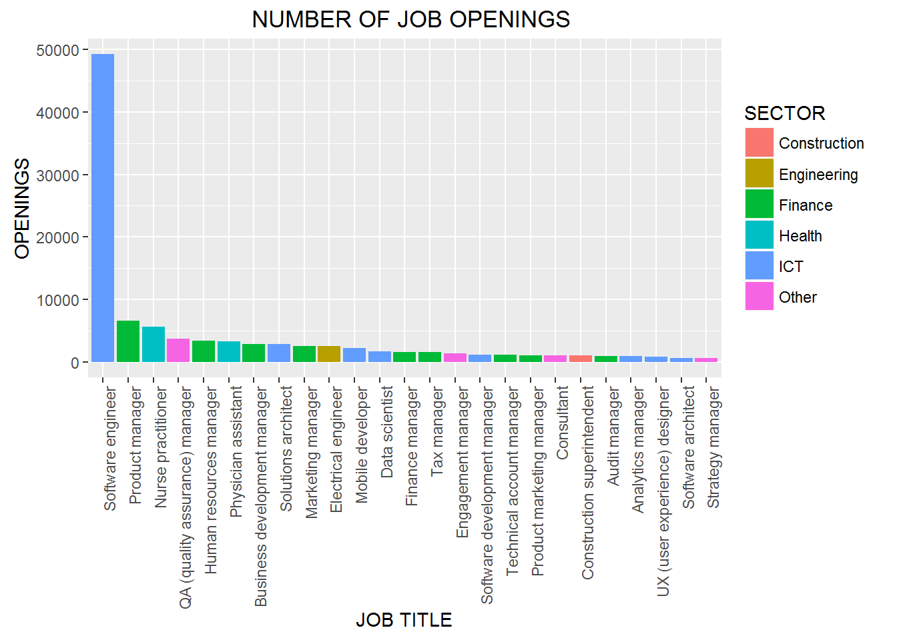

Which jobs are considered to offer great potential for earnings and opportunity?
glassdoor.com, one of the fastest growing career website provides company reviews, ratings, salaries, approval rating among other human resource related information. Considerable amounts of data have been generated courtesy of the platform, forming an interesting dataset that can be analysed for insight.
Based on three factors namely, the number of job openings, earnings potential as measured by median base salary, and the rating of the career opportunity, glassdoor complied a list of the “best” jobs in america in 2016. Only jobs titles that received at least 75 salary reviews and 75 career opportunity reviews were considered.
In this post the top 25 jobs are analysed and visualized using R programming language. The data was curated into a csv file with additional column SECTOR included. We begin by loading the requisite packages for analysis and visualization, which packages are part of the tidyverse package by Hadley Wickham. The csv data is also read as a dataframe.
Which job had the highest rating?
plt_top_jobs <- top_jobs %>% ggplot(aes(x = reorder(JOB.TITLE, RATING), y =RATING, fill=SECTOR)) + geom_bar(stat = "identity") + coord_flip() +
labs(title="JOBS RATING - 2016", x="JOB TITLE", y="JOB RATING") +
theme(plot.title = element_text(hjust = 0.5))
plt_top_jobs Data scientist had the highest rating in the US is 2016 and was rated at 4.1. This was the only job title that registered over 4.0 rating.
How were the ratings across the various sectors?
plt_rating_per_sector <- top_jobs %>%
ggplot(aes(x = reorder(factor(SECTOR), -RATING), fill = factor(SECTOR), y = RATING, group_by(SECTOR))) +
geom_dotplot(binaxis = "y", stackdir = "center", color = "gold", dotsize = 1.5) +
labs(title = "JOB RATINGS PER SECTOR", x ="SECTOR") +
theme(legend.position = "none", plot.title = element_text(hjust = 0.5))
plt_rating_per_sector The finance sector had 9 jobs while ICT had 8 slots making it to the to 25 list.
Which job had the highest number of openings?
plt_top_jobs_openings <- top_jobs %>% ggplot(aes(x = reorder(JOB.TITLE, -OPENINGS), y =OPENINGS, fill=SECTOR)) + geom_bar(stat = "identity") + theme(axis.text.x = element_text(angle = 90, hjust = 1), plot.title = element_text(hjust = 0.5)) + labs(title=" NUMBER OF JOB OPENINGS", x="JOB TITLE")
plt_top_jobs_openings
Software engineering had a whooping 49,270 job openings in 2016. Product manager and Nurse practitioner came a distance 2nd and 3rd respectively. The huge number of software engineering positions can be attributed to organizations’ desire to automate their business processes.
Where is the Money?
top_jobs <- top_jobs %>% mutate(Salary = MEDIAN_BASE_SALARY, Title = JOB.TITLE, Sector = SECTOR) %>% arrange(desc(Salary))
plt_pay_rating <- top_jobs %>% ggplot(aes(x = Salary, y = reorder(Title, Salary), color=Sector)) + geom_point(aes(size=Salary)) +
labs(title="RATING vs BASE SALARY", x="BASE SALARY", y="JOB TITLE") + scale_x_continuous(labels = dollar, breaks = seq(0,200000, by=10000)) + theme(axis.text.x = element_text(angle = 90, hjust = 1), legend.position = 'none', plot.title = element_text(hjust = 0.5)) +
theme(plot.margin = unit(c(0,0,0,0.5), "cm"))
ggplotly(plt_pay_rating)Software development manager had the highest base salary in 2016. The annual base salary was $135,000. Other positions that made it to top 5 list included Strategy manager, Software architect, Engagement manager and Solutions architecture. Data scientist was ranked sixth with an annual salary of $116,840.